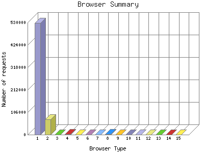

Analog 5.24
Analog 5.24 Report Magic for Analog 2.13
Report Magic for Analog 2.13The Browser Summary identifies the most popular web browsers used to visit
this site.
Browsers are broken down by recognized categories such as
Netscape Navigator/Communicator, Microsoft Internet Explorer, WebTV, Opera
and the like. Within each category is also a subgroup by version number
such as 'MSIE 5.0' or 'Netscape 4.5'.
This report is sorted by number of requests.

| Browser Type | Number of requests | Number of page requests in the last 7 days | Percentage of page requests in the last 7 days | |
|---|---|---|---|---|
| 1. | Netscape (compatible) | 527,272 | 4,242,290,753 | 229.13% |
| 2. | Sogou web spider | 71,307 | 3,764,778,159 | 203.33% |
| Sogou web spider/4 | 71,302 | 2,823,583,625 | 152.50% | |
| Sogou web spider/3 | 5 | 941,194,534 | 50.83% | |
| 3. | Googlebot | 361 | 4,175,783,510 | 225.53% |
| Googlebot/2 | 163 | 1,352,199,908 | 73.3% | |
| Googlebot/Nutch-2 | 7 | 1,882,389,068 | 101.68% | |
| 4. | CCBot | 1,689 | 3,764,778,137 | 203.33% |
| CCBot/2 | 1,614 | 2,823,583,603 | 152.50% | |
| CCBot/1 | 75 | 941,194,534 | 50.83% | |
| 5. | LWP::Simple | 30 | 4,175,783,510 | 225.53% |
| LWP::Simple/5 | 13 | 3,764,778,136 | 203.33% | |
| LWP::Simple/6 | 17 | 411,005,374 | 22.20% | |
| 6. | Wget | 448 | 4,056,599,724 | 219.10% |
| Wget/1 | 448 | 4,056,599,724 | 219.10% | |
| 7. | User-Agent: Mozilla | 154 | 4,056,599,724 | 219.10% |
| User-Agent: Mozilla/5 | 154 | 4,056,599,724 | 219.10% | |
| 8. | Scrapy | 1,300 | 3,937,415,938 | 212.67% |
| Scrapy/2 | 1,046 | 4,175,783,510 | 225.53% | |
| Scrapy/1 | 248 | 3,645,594,350 | 196.90% | |
| Scrapy/0 | 6 | 411,005,374 | 22.20% | |
| 9. | mozilla | 91 | 3,937,415,938 | 212.67% |
| mozilla/5 | 72 | 2,055,026,870 | 110.100% | |
| 10. | Dalvik | 1,011 | 3,818,232,152 | 206.22% |
| Dalvik/2 | 984 | 4,056,599,724 | 219.10% | |
| Dalvik/1 | 27 | 4,056,599,724 | 219.10% | |
| 11. | QuickTime | 5 | 3,764,778,136 | 203.33% |
| QuickTime/7 | 5 | 3,764,778,136 | 203.33% | |
| 12. | rogerbot | 54 | 3,764,778,136 | 203.33% |
| rogerbot/1 | 54 | 3,764,778,136 | 203.33% | |
| 13. | serpstatbot | 974 | 3,764,778,136 | 203.33% |
| serpstatbot/2 | 894 | 1,882,389,068 | 101.68% | |
| serpstatbot/1 | 80 | 1,882,389,068 | 101.68% | |
| 14. | Mechanize | 6 | 3,764,778,136 | 203.33% |
| Mechanize/2 | 6 | 3,764,778,136 | 203.33% | |
| 15. | ${jndi:ldap: | 14 | 3,764,778,136 | 203.33% |
| ${jndi:ldap://144 | 2 | 941,194,534 | 50.83% | |
| ${jndi:ldap://188 | 4 | 941,194,534 | 50.83% | |
| ${jndi:ldap://167 | 4 | 941,194,534 | 50.83% | |
| ${jndi:ldap://51 | 4 | 941,194,534 | 50.83% | |
| [not listed: 964] | 1,864,300 | 3,227,449,792 | 174.31% | |
This report was generated on January 23, 2025 01:57.
Report time frame December 19, 2013 00:28 to October 14, 2020 09:11.
| Web statistics report produced by: | |
| Analog 5.24 | Report Magic for Analog 2.13 |